체험 시설
-
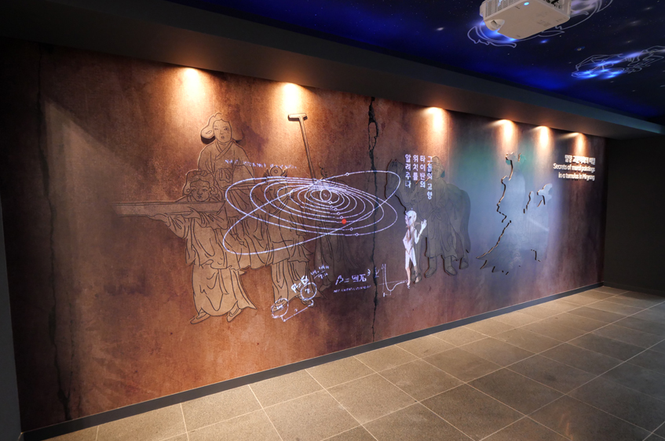
- 01. 인트로
- 밀양의 한 오래된 무덤에서 벽화가 발견되었습니다.
벽화에 적혀있는 흔적을 따라가 미지의 친구들을 찾아보아요.
-
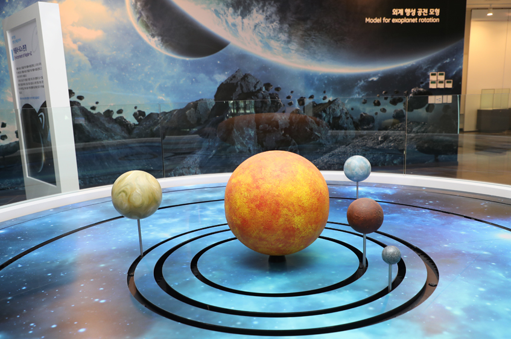
- 02. 캐플러 62 공전모형
- 거문고 자리에 있는 케플러 62 항성중 2개의 행성이 지구와 비슷한 환경으로 추측되고 있습니다.
어쩌면 이 곳에 우리의 친구들이 살고 있지 않을까요?
-
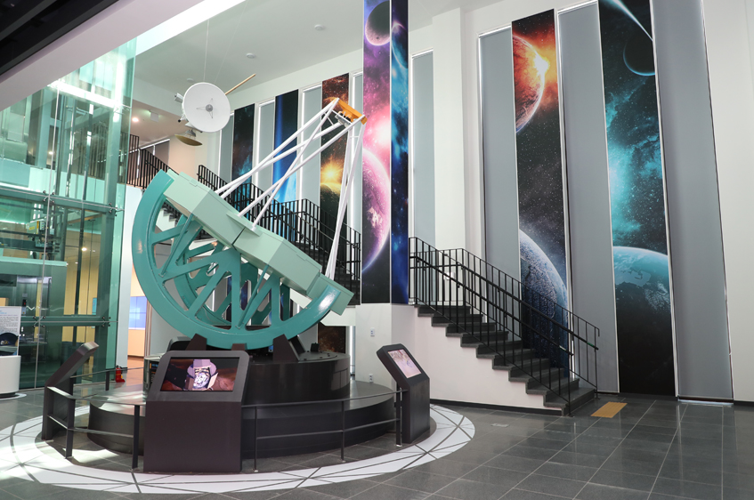
- 03. GMT(Giant Magellan Telescope)
- 25.4m의 세계 초거대 망원경인 GMT는 칠레 라스캄파나스에 2025년 설치될 예정입니다.
1/8사이즈의 GMT 모형으로부터 그 거대한 사이즈를 느껴보세요.
-
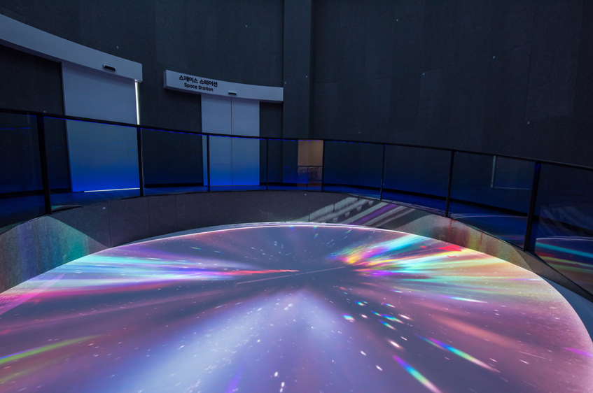
- 04. 스페이스 시어터
- 5m 크기의 원형 바닥형 시어터를 통해 우리는 우주탐사선 미리벌호를 타고 웜홀을 지나
토성의 위성 타이탄으로 떠나는 실감나는 체험을 할 수 있습니다.
-
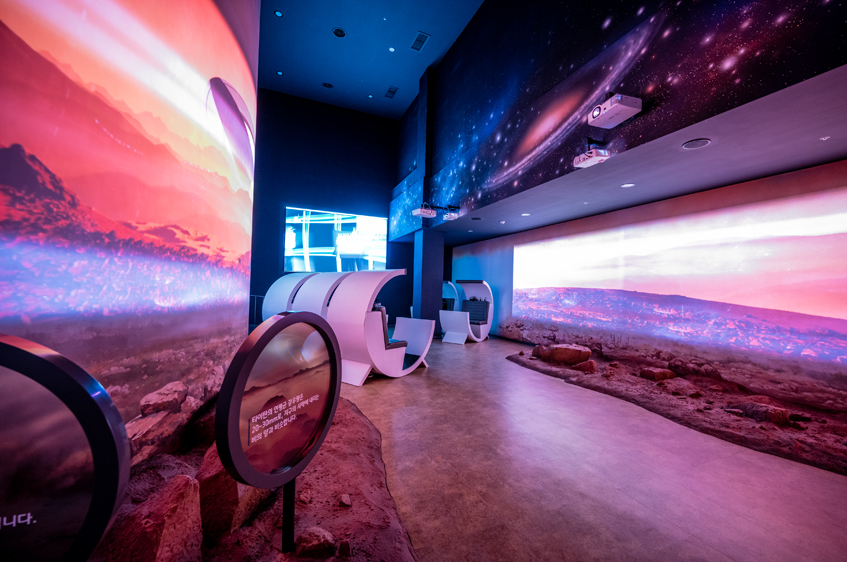
- 05. 타이탄 세트장
- 토성의 위성 타이탄을 그대로 재현한 듯한 타이탄 세트장입니다.
이 곳에서 위기에 빠진 우리의 친구를 VR게임을 이용해 구해보세요.
천체 투영관
-
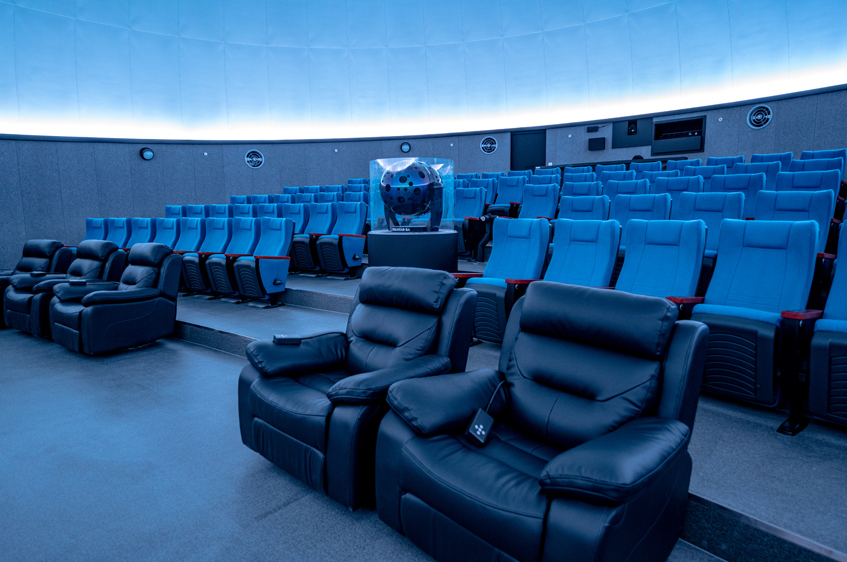
- 01
- 밀양아리랑 우주천문대의 천체투영관 ‘상상’은 직경 14m 스크린과 99석의 좌석이 있습니다.
-
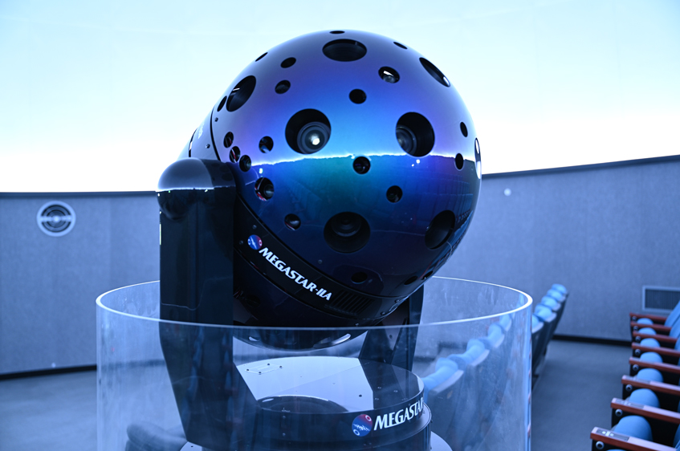
- 02
- Megastar-IIA 광학식 투영기는 약 천만개의 별을 투영하여 실제와 같은 밤하늘을 구현할 수 있습니다.
-
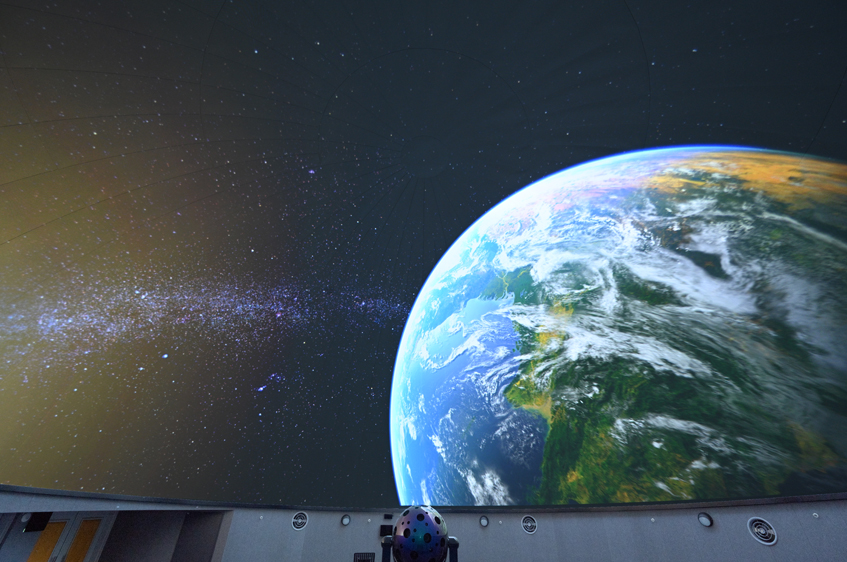
- 03
- Sky Explorer는 다양한 기능을 갖춘 세계 최고의 천체투영 프로그램입니다.
4K의 고해상도 디지털 투영시스템으로 최고의 천문 체험을
누려보세요.
-
- 04
- 5버튼 클리커를 사용하여 자신의 의견을 전달해주세요.
우리 해설자들은 즉석에서 여러분의 의견을 받아 최고의 해설로 돌려드립니다.
-
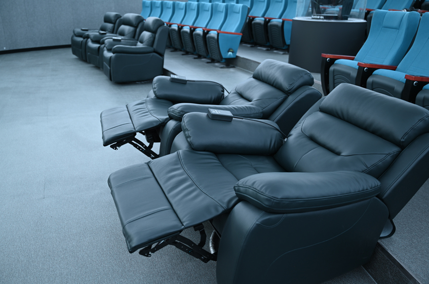
- 05
- 5개의 특석이 준비되어 있습니다. 편안하고 낭만적인 우주여행을 느껴보세요.
천체관측실
-
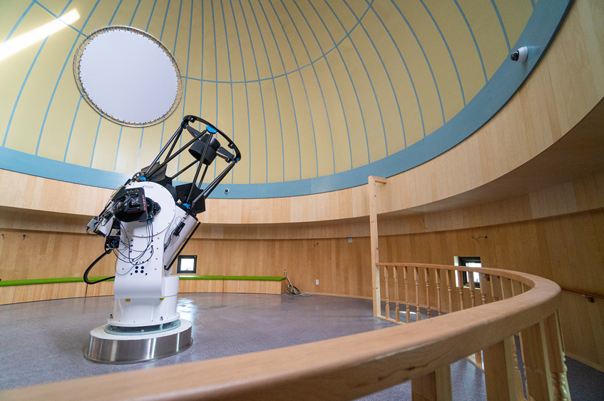
- 주관측실
- 주관측실 망원경 ‘별이’는 70cm의 구경을 지닌 고성능 망원경으로 우주의 신비로운 천체들을 보여줍니다.
-
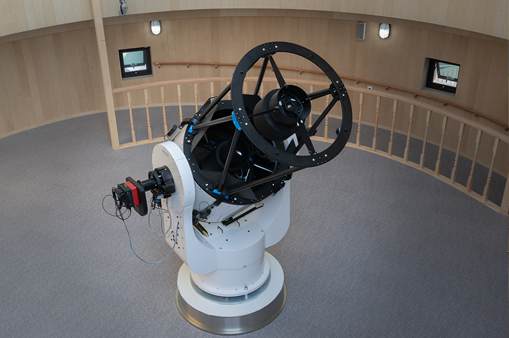
- 주관측실
- 주관측실 망원경 ‘별이’ 는 세계최초로 음성 인식 제어 시스템이 탑재되어 있어 음성으로 망원경을 가동할 수 있습니다.
-
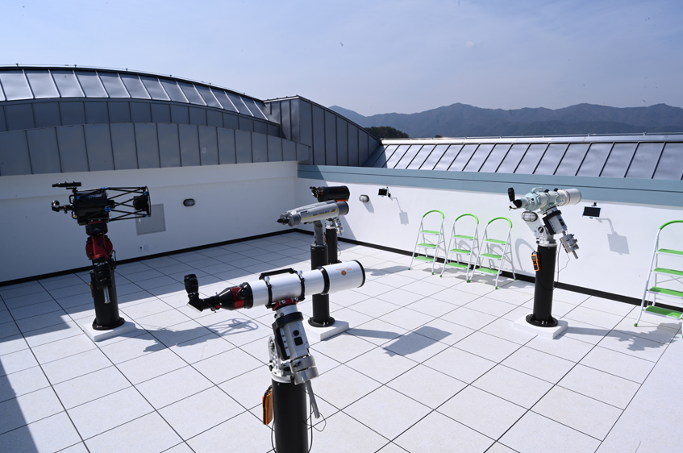
- 보조관측실
- 보조관측실은 총 5대의 망원경 및 쌍안경으로
낮에는 태양을, 밤에는 행성을 포함한 흥미로운 천체대상들을 보여줍니다.
-
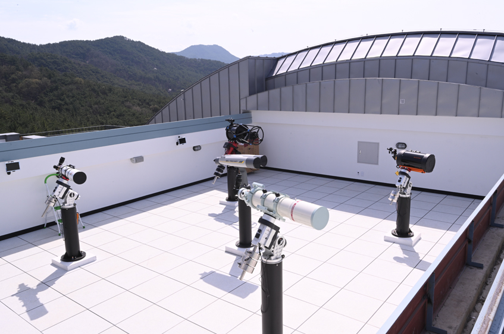
- 보조관측실
- 태양 전용 망원경과 고성능 망원경으로 태양 뿐만 아니라 천체대상들을
디지털카메라, 스마트폰으로 촬영 후 간직 할 수 있습니다.